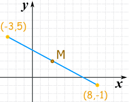

Ratio of a Line Segment
Coordinate Point

Here the point (12,5) is
12 units along, and 5 units up
Cartesian Coordinates can be used to locate a point by how far along and how far up it is:
Two points make a line segment:
We can see its midpoint "M" (try dragging the end points).
First let's calculate the midpoint, then later we can see how to divide the line into any ratio.
Midpoint of a Line Segment

The midpoint is halfway between the two end points:
- Its x value is halfway between the two x values
- Its y value is halfway between the two y values
To calculate it:
- Add both "x" coordinates, divide by 2
- Add both "y" coordinates, divide by 2

In other words it's x value is the average of the x values of point A and B (and similarly for y).
As a formula:
M = ( xA+xB2 , yA+yB2 )
Example: What's the midpoint here?

M = ( xA+xB2 , yA+yB2 )
M = ( (−3)+82 , 5+(−1)2 )
M = ( 5/2, 4/2 )
M = ( 2.5, 2 )
Dividing a Line Segment into Any Ratio
What if we don't want the exact middle? What if we want to find a point P that divides the line segment from A to B into a specific ratio, like 1:2 or 3:5?
Let's say the ratio is m : n
This means for every m parts of the distance from A to P, there are n parts of the distance from P to B.

To find the coordinates of point P, we calculate a "weighted average" of the endpoints:
- Multiply the coordinates of A by n
- Multiply the coordinates of B by m
- Add them together and divide by the total parts (m + n)
Notice how the ratios swap places! The distance closer to A (m) multiplies point B, and the distance closer to B (n) multiplies point A.
Imagine n=1 and m=0, then we have all A and no B.
As a formula:
P = ( nxA + mxBm + n , nyA + myBm + n )

Example: Find the point P that divides the line segment from A(1, 2) to B(7, 5) in the ratio 2 : 1.
Here, we have:
- A = (1, 2) so xA = 1, yA = 2
- B = (7, 5) so xB = 7, yB = 5
- Ratio m : n = 2 : 1 so m = 2, n = 1
Let's find the x coordinate:
x = nxA + mxBm + n
x = 1(1) + 2(7)2 + 1
x = 1 + 143 = 153 = 5
Now let's find the y coordinate:
y = nyA + myBm + n
y = 1(2) + 2(5)2 + 1
y = 2 + 103 = 123 = 4
So the coordinates of point P are (5, 4).